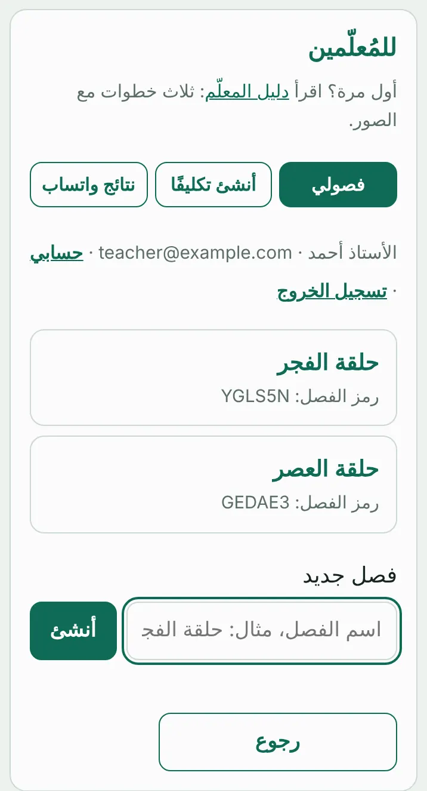
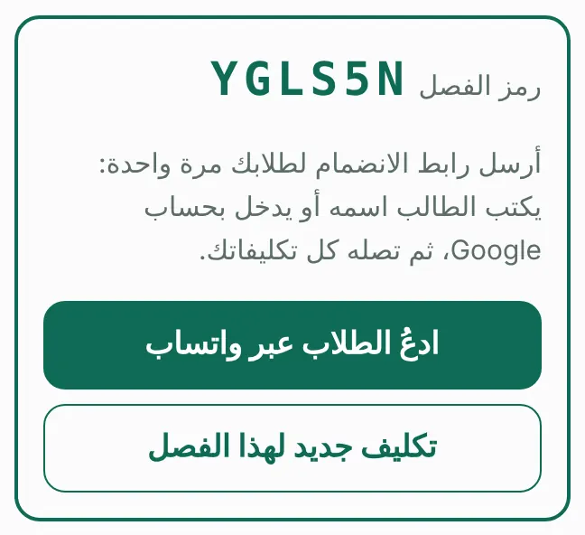
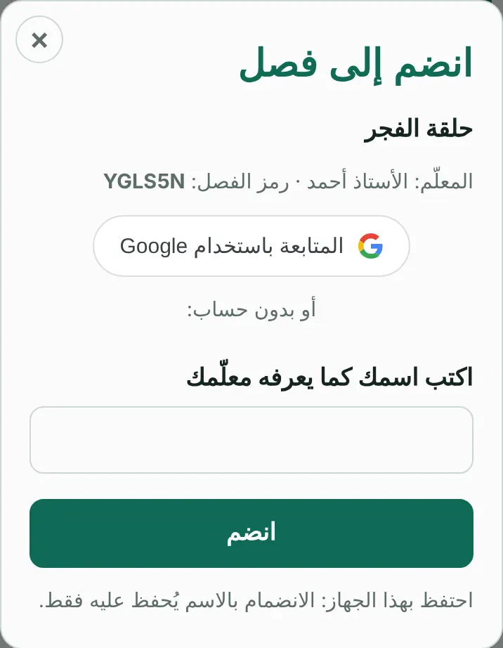
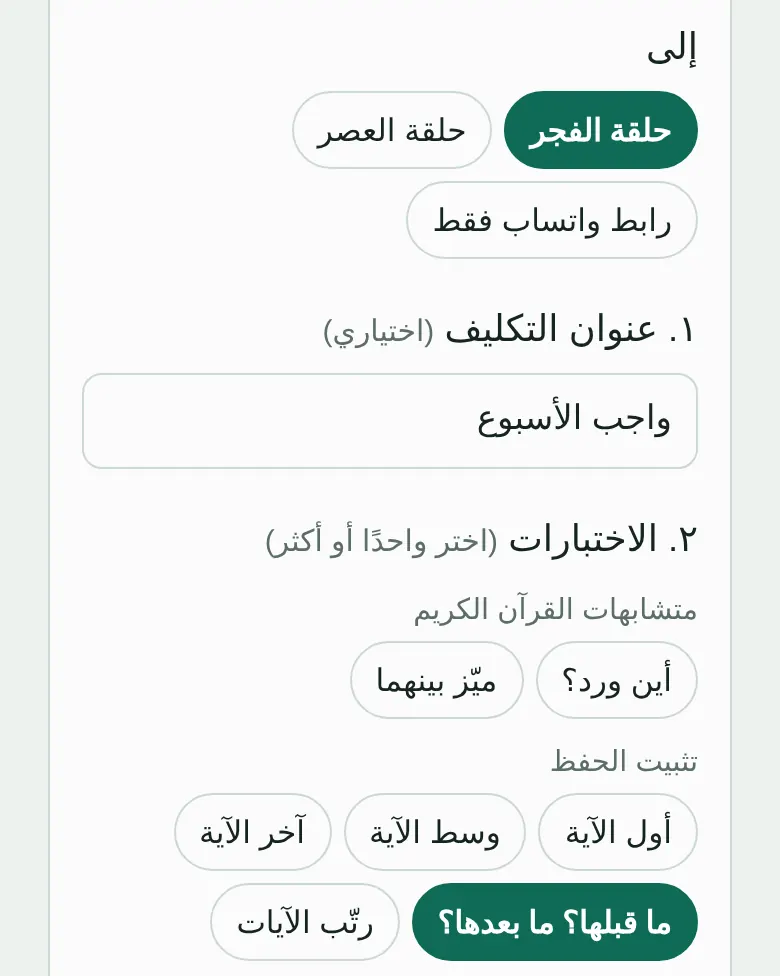
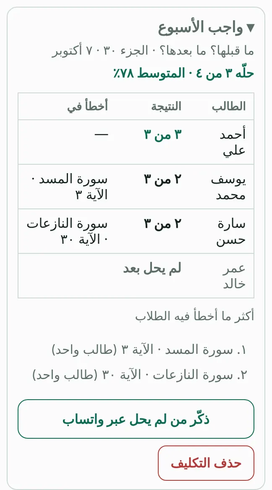

أنشئ فصلًا لطلابك، وأرسل لهم تكليفات من اختبارات الموقع، وتظهر لك نتائجهم تلقائيًا: من حلّ ومن لم يحل، وما أخطؤوا فيه. مجاني بالكامل.
افتح صفحة المعلّمين (من «للمُعلّمين» أسفل الموقع) ثم «فصولي»، وادخل بحساب Google، واكتب اسم الفصل (مثل: حلقة الفجر) واضغط «أنشئ». يمكنك إنشاء فصل لكل حلقة.

افتح الفصل واضغط «ادعُ الطلاب عبر واتساب»، وأرسل الرسالة إلى مجموعة طلابك. يفتح الطالب الرابط مرة واحدة، ويكتب اسمه أو يدخل بحساب Google.

وهذا ما يراه الطالب حين يفتح الرابط:

اضغط «تكليف جديد لهذا الفصل»، واختر الاختبارات والأجزاء أو السور وعدد الأسئلة، ثم «أنشئ التكليف». يظهر التكليف لكل طلاب الفصل في «تكليفاتي»، ويحلّون جميعًا الأسئلة نفسها، ولكل طالب محاولة واحدة.

تصل نتيجة كل طالب إلى الفصل حين ينهي. ترى من حلّ ودرجته وما أخطأ فيه، ومن لم يحل بعد، وأكثر ما أخطأ فيه الطلاب. ويمكنك تذكير من لم يحل برسالة واتساب جاهزة، أو تنزيل النتائج ملف Excel.
